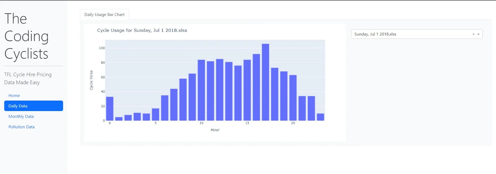
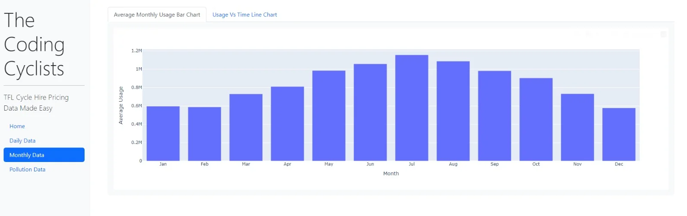
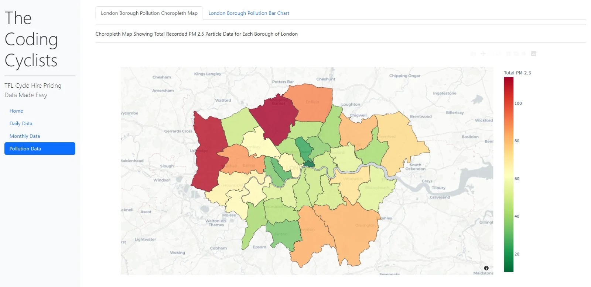

03Data visualisation
Mock Cycle Prices App
A project aimed to adjust TFL cycle hire pricing, via an algorithm that adjusts the price of the cycle hire dependent on hourly and monthly TFL cycle hire data, alongside PM 2.5 pollution levels across the boroughs of London.
- When
- 2023 · UCL coursework (COMP0034)
- Team
- The Coding Cyclists
- Type
- Data visualisation

Overview
The aim was to create a price map that increases TFL revenue by promoting cycle hire and taking advantage of rush hour prices, as well as promoting cycle hire in highly polluted boroughs with hopes to reduce pollution across greater London.
The app
The Dash app's main feature is an interactive pricing choropleth map, letting users identify the price of Santander cycles in different boroughs of London, at different times of day and in different months of the year.
The map can be broken down into the graphs behind it, visualising the hourly, monthly and pollution data used to form it. These sit in tabs on a sidebar for users to view and analyse.
Testing and continuous integration
Because the multi-page app's sidebar wasn't testable, a single-page version of the app was created specifically for testing.
- 15 tests written with pytest and Selenium, each documented using the GIVEN-WHEN-THEN approach
- Coverage reports showed 89% coverage across the tested files
- A GitHub Actions workflow lints with flake8 and runs pytest with coverage on every commit to main
Gallery


Enlarge image

Enlarge image

Enlarge image